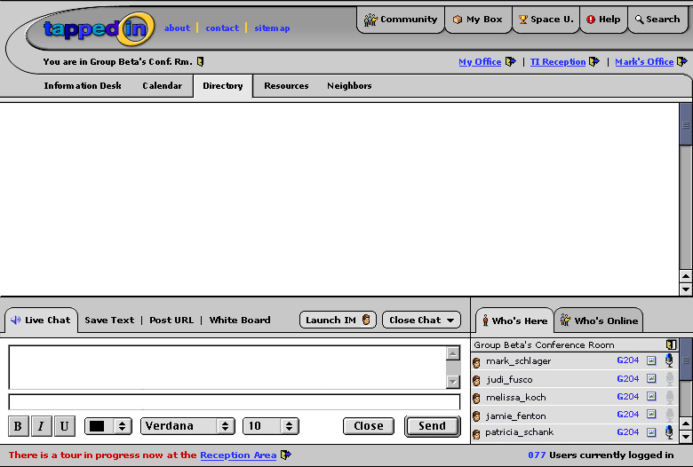
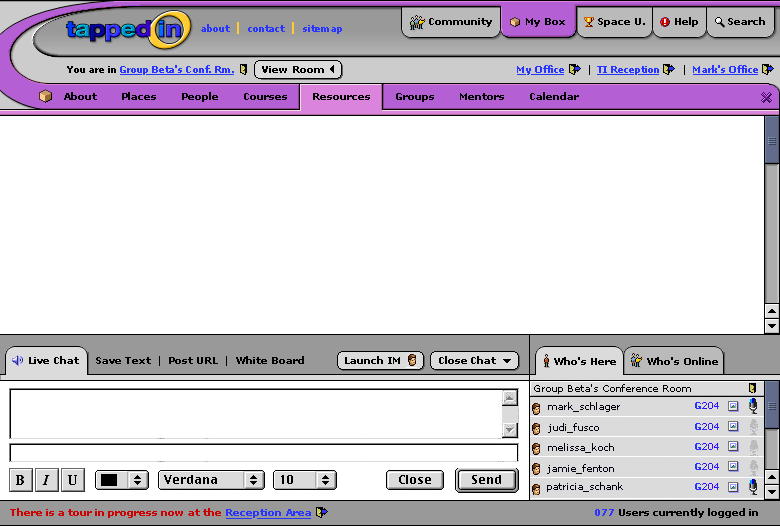
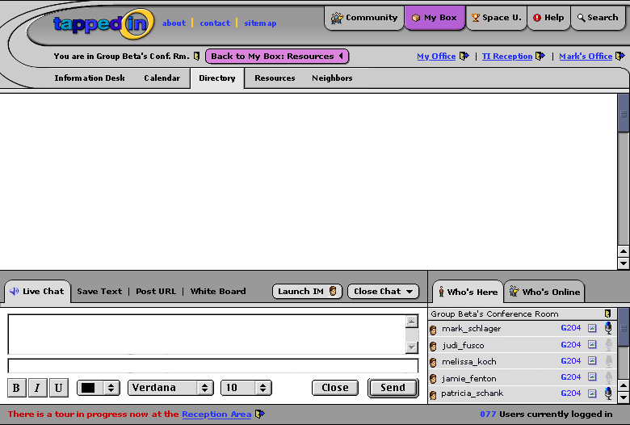
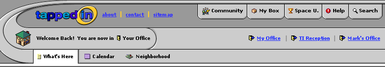

Just below I've added the image of what you'd see when you first log in (minus content). The image after that shows what you'd see if you click on the My Box tab. The image after that shows how you'd toggle back to see the room contents, by clicking on the View Room button.
Below is what you'd see if you click on My Box, which contains your files, bookmarks, etc.) The contents of My Box will overlay the contents of the room and the purple swoosh helps indicate that My Box is the focus. You're still in the room and can talk to others in the chat area.
Below is what you'd see if you clicked on the View Room button to look at items in the room. My Box is still open but hidden behinds the room contents. Do we need to keep My Box open (but hidden)? Why not just turn everything gray again? Is it a helpful reminder of what you were just looking at? I think I'd make the My Box tab gray, since it really isn't in the front anymore, but keep the Back to My Box button there in purple if you want to allow quick return. (But wouldn't clicking on My Box tab give you as quick a return?)"
I'm currently working on refining the main navigation, but unfortunately I haven't been able to finish up as much as I had wanted for this morning. The image below shows the direction I'm heading. This screen represents your opening navigation- in your office. The building represents "your office" (an idea of using a "city" neighborhood for TappedIn rather than a building metaphor) and clicking on "neighborhood" would show a map of buildings you have chosen to have your office near. (if only the real world was like this- no commute!)
We like the idea of a house. It's cute and cozy and warm and fuzzy, which is "part of what tapped in is" as Judi says :)"